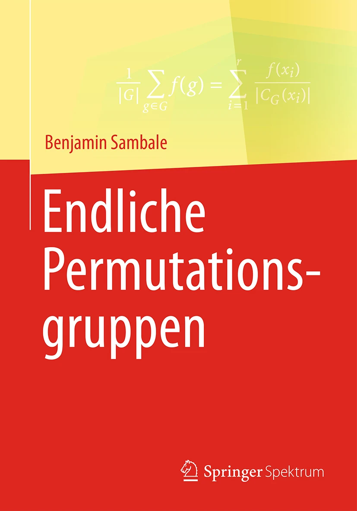
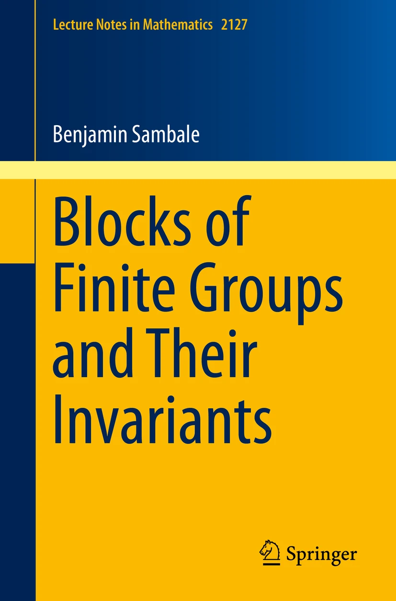
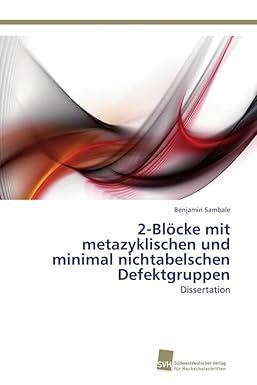

Books
|

|
Endliche Permutationsgruppen, Springer Spektrum, Wiesbaden, 2017,
errata,
MAGMA code for Bem 8.28,
GAP code for Bem 8.28,
GAP code for Satz 10.23,
GAP code for Satz 11.3
|
|

|
Blocks of finite groups and their invariants, Lecture Notes in Math. 2127, Springer-Verlag, Cham, 2014,
pdf
(Habilitation thesis), errata
Caution: pdf file has different numbering than actual book,
|
|

|
2-Blöcke mit metazyklischen und minimal nichtabelschen Defektgruppen,
Südwestdeutscher Verlag für Hochschulschriften, Saarbrücken, 2011,
pdf (Dissertation)
|
Research articles (in reverse chronological order)
- (with P. Diaconis, E. Giannelli, R. M. Guralnick, S. Law, G. Navarro and H. Spink)
On the number and sizes of double cosets of Sylow subgroups of the symmetric group,
submitted, pdf
- Characterizing inner automorphisms and realizing outer automorphisms,
appears in Adv. Group Theory Appl., pdf
- Fusion invariant characters of \(p\)-groups,
Comm. Algebra 53 (2025), 2328–2332, pdf
- (with S. Koshitani and C. Lassueur)
Principal 2-blocks with wreathed defect groups up to splendid Morita equivalence,
Ann. Rep. Theory 1 (2024), 439–463, pdf
- On a fixed point formula of Navarro-Rizo,
Proc. Amer. Math. Soc. 152 (2024), 3629–3634, pdf
- (with P. J. Cameron, D. Craven, H. R. Dorbidi) Minimal cover groups,
J. Algebra 660 (2024), 345–372, pdf
- (with P. Bhowal, P. J. Cameron, R. K. Nath)
Genus and crosscap of solvable conjugacy class graphs of finite groups,
Arch. Math. 122 (2024), 475–489, pdf
- Real characters in nilpotent blocks,
Vietnam J. Math. 52 (2024, special issue), 421–433, pdf
- On redundant Sylow subgroups,
J. Algebra 650 (2024), 1–9, pdf
- (with S. Aivazidis and M. Loukaki) Common transversals and complements in abelian groups,
J. Algebraic Combin. 59 (2024), 581–595, pdf
- Groups of \(p\)-central type,
Math. Z. 306 (2024), no. 3, pdf
- (with D. Benson) Finite dimensional algebras not arising as blocks of group algebras,
Forum Math. 36 (2024), 389–402, pdf
- Real blocks with dihedral defect groups revisited,
Bull. Aust. Math. Soc. 109 (2024), 327–341, pdf
- (with N. N. Hung and P. H. Tiep)
Bounding \(p\)-Brauer characters in finite groups with two conjugacy classes of \(p\)-elements,
Israel J. Math. 262 (2024), 327–358, pdf
- On the converse of Gaschütz' complement theorem,
J. Group Theory 26 (2023), 931–949, pdf (improved version)
- Character table sudokus,
Arch. Math. 121 (2023), 23–32, pdf
- (with A. Moretó) Groups with 2-generated Sylow subgroups and their character tables,
Pacific J. Math. 323 (2023), 337–358, pdf
- (with G. Navarro) Characters, Commutators and Centers of Sylow Subgroups,
Represent. Theory 27 (2023), 717–733, pdf
- (with P. Bhowal, P. J. Cameron and R. K. Nath) Solvable conjugacy class graph of groups,
Discrete Math. 346 (2023), 113467, pdf
- (with J. Murray) A solution to Brauer's Problem 14,
J. Algebra 621 (2023), 87–91 , pdf
- An invitation to formal power series,
Jahresber. Dtsch. Math.-Ver. 125 (2023), 3–69, pdf (improved
version)
- (with G. Navarro) Alternating sums over \(\pi\)-subgroups,
J. Pure Appl. Algebra 227 (2023), 107227, pdf
- (with C. G. Ardito) Cartan matrices and Brauer's \(k(B)\)-Conjecture V,
J. Algebra 606 (2022), 670–699, pdf
- (with P. Wellmann) On a bound of Cocke and Venkataraman,
Monatsh. Math. 197 (2022), 505–515, pdf,
small group ids
- (with M. Tărnăuceanu) On the size of coset unions,
J. Algebraic Combin., 55 (2022), 979–987, pdf
- (with S. Koshitani and C. Lassueur)
Splendid Morita equivalences for principal blocks with semidihedral defect groups,
Proc. Amer. Math. Soc., 150 (2022), 41–53, pdf
- (with C. G. Ardito)
Broué's Conjecture for 2-blocks with elementary abelian defect groups of order 32,
Adv. Group Theory Appl. 12 (2021), 71–78, pdf
- (with D. Rossi) Restrictions of characters in p-solvable groups,
J. Algebra 587 (2021), 130–141, pdf
- The reciprocal character of the conjugation action,
Publ. Math. Debrecen 99 (2021), 243–260, pdf
- Generalized bases of finite groups,
Arch. Math. 117 (2021), 9–18, pdf
- Blocks with small-dimensional basic algebra,
Bull. Aust. Math. Soc., 103 (2021), 461–474, pdf
- (with G. Navarro) Weights and nilpotent subgroups,
Int. Math. Res. Not. 2021 (2021), 2526–2538, pdf
- Survey on perfect isometries,
Rocky Mountain J. Math. 50 (2020), 1517–1539, pdf
- On a theorem of Ledermann and Neumann,
Amer. Math. Monthly 127 (2020), 827–834, pdf
- (with E. Giannelli, N. Rizo and A. A. Schaeffer Fry)
Groups with few \(p'\)-characters degrees in the principal block,
Proc. Amer. Math. Soc. 148 (2020), 4597–4614, pdf
- Character tables and defect groups,
J. Algebra 562 (2020), 323–340, pdf
- (with E. Giannelli) On restriction of characters to defect groups,
J. Algebra 558 (2020), 423–433, pdf
- (with A. Bächle) Orders generated by character values,
Monatsh. Math. 191 (2020), 665–678, pdf
- Landau's Theorem for \(\pi\)-blocks of \(\pi\)-separable groups,
Adv. Group Theory Appl. 8 (2019), 103–115, pdf
- (with I. M. Isaacs and G. Navarro) Irreducible extensions of characters,
Israel J. Math. 234 (2019), 629–644, pdf
- Bounding the number of characters in a block of a finite group,
Adv. Math. 358 (2019), 106861, 20 pp., pdf
- Pseudo Frobenius numbers,
Expo. Math. 37 (2019), 200–206, pdf
- (with B. Külshammer and Y. Otokita) Loewy lengths of centers of blocks II,
Nagoya Math. J. 234 (2019), 127–138, pdf
- Pseudo Sylow numbers, Amer. Math. Monthly 126 (2019), 60–65,
pdf
- On the projective height zero conjecture,
Proc. Amer. Math. Soc. 147 (2019), 487–488, pdf
- Morita equivalent blocks of symmetric groups, SIGMA 14 (2018), 100, 8 pages,
GAP code for Conjecture 1,
GAP code for Conjecture 2,
Magma code for Conjecture 2
- Remarks on Harada's Conjecture, Israel J. Math. 228 (2018), 513–526,
pdf
- (with B. Külshammer) Loewy lengths of centers of blocks,
Q. J. Math. 69 (2018), 855–870,
pdf
- (with G. Navarro) On the blockwise modular isomorphism problem,
Manuscripta Math. 157 (2018), 263–278,
pdf
- (with A. Bächle) Groups whose elements are not conjugate
to their powers, Arch. Math. 110 (2018), 447–454,
pdf
- Solution of Brauer's \(k(B)\)-Conjecture for \(\pi\)-blocks of \(\pi\)-separable groups,
Forum Math. 30 (2018), 1061–1064,
pdf
- (with G. Navarro and P. H. Tiep) Characters and Sylow 2-subgroups
of maximal class revisited, J. Pure Appl. Algebra 222 (2018), 3721–3732,
pdf
- Regular orbits of coprime linear groups in large characteristic,
Bull. Aust. Math. Soc. 96 (2017), 438–444,
pdf
- A counterexample to a conjecture of Wada, J. Algebra 489 (2017),
582–585, pdf
- (with G. Malle and G. Navarro) On defects of characters and
decomposition numbers, Algebra Number Theory 11 (2017), 1357–1384,
pdf
- Refinements of the orthogonality relations for blocks,
Algebr. Represent. Theory 20 (2017), 1109–1131,
pdf
- On a theorem of Blichfeldt, Expo. Math. 35 (2017), 221–255,
pdf
- Isotypies for the quasisimple groups with exceptional
Schur multiplier, J. Algebra Appl. 16 (2017), 1750078,
pdf
- Cartan matrices and Brauer's \(k(B)\)-Conjecture IV,
J. Math. Soc. Japan 69 (2017), 735–754,
pdf
- (with G. Navarro) A counterexample to Feit's Problem VIII
on decomposition numbers, J. Algebra 477 (2017), 494–495,
pdf
- On blocks with abelian defect groups of small rank,
Results Math. 71 (2017), 411–422,
pdf
- (with P. Landrock) On centers of blocks with one simple module,
J. Algebra 472 (2017), 339–368,
pdf
- Fusion systems on bicyclic 2-groups, Proc. Edinb. Math. Soc. 59
(2016), 989–1018, pdf
- 2-Blocks with minimal nonabelian defect groups III,
Pacific J. Math. 280 (2016), 475–487,
pdf
- Broué's isotypy conjecture for the sporadic groups and their covers
and automorphism groups, Internat. J. Algebra Comput. 25 (2015),
951–976, pdf
- The Alperin-McKay Conjecture for metacyclic, minimal non-abelian
defect groups, Proc. Amer. Math. Soc. 143 (2015), 4291–4304,
pdf
- Cartan matrices and Brauer's \(k(B)\)-Conjecture III,
Manuscripta Math. 146 (2015), 505–518,
pdf
- (with L. Héthelyi, R. Kessar and B. Külshammer)
Blocks with transitive fusion systems, J. Algebra 424 (2015),
190–207, pdf
- Exponent and \(p\)-rank of finite \(p\)-groups and applications,
Arch. Math. (Basel) 103 (2014), 11–20,
pdf
- (with S. Koshitani and B. Külshammer) On Loewy lengths of blocks,
Math. Proc. Cambridge Philos. Soc. 156 (2014), 555–570,
pdf
- (with B. Külshammer, G. Navarro and P. H. Tiep)
Finite groups with two conjugacy classes
of p-elements and related questions for p-blocks,
Bull. London Math. Soc. 46 (2014), 305–314,
pdf
- On the Brauer-Feit bound for abelian defect groups,
Math. Z. 276 (2014), 785–797,
pdf
- (with C. W. Eaton, R. Kessar and B. Külshammer)
2-blocks with abelian defect groups, Adv. Math. 254 (2014),
706–735, pdf
- (with L. Héthelyi and B. Külshammer)
A note on Olsson's Conjecture, J. Algebra 398 (2014),
364–385, pdf
- Further evidence for conjectures in block theory,
Algebra Number Theory 7 (2013), 2241–2273,
pdf
- Blocks with defect group \(Q_{2^n}\times C_{2^m}\) and \(SD_{2^n}\times C_{2^m}\),
Algebr. Represent. Theory 16 (2013), 1717–1732,
pdf
- Blocks with central product defect group \(D_{2^n}*C_{2^m}\), Proc. Amer. Math. Soc. 141 (2013),
4057–4069, pdf
- Brauer's Height Zero Conjecture for metacyclic defect groups,
Pacific J. Math. 262 (2013), 481–507,
pdf
- (with B. Külshammer)
The 2-blocks of defect 4,
Represent. Theory 17 (2013),
226–236, pdf
- (with C. W. Eaton and B. Külshammer)
2-Blocks with minimal nonabelian defect groups II,
J. Group Theory 15 (2012), 311–321,
pdf
- Blocks with defect group \(D_{2^n}\times C_{2^m}\), J. Pure Appl. Algebra 216 (2012), 119–125,
pdf
- Fusion systems on metacyclic 2-groups, Osaka J. Math. 49 (2012),
325–329, pdf
- 2-Blocks with minimal nonabelian defect groups, J. Algebra 337 (2011),
261–284, pdf
- Cartan matrices and Brauer's \(k(B)\)-conjecture II,
J. Algebra 337 (2011), 345–362,
pdf
- Cartan matrices and Brauer's \(k(B)\)-conjecture,
J. Algebra 331 (2011), 416–427,
pdf
- (with L. Héthelyi and B. Külshammer)
Conjugacy classes and characters of finite p-groups,
Comm. Algebra 39 (2011), 657–685,
pdf
Other writings
- Groups with supersolvable automorphism group, pdf
- Local determination of Frobenius–Schur indicators,
in: Representations of Finite Groups, Oberwolfach Reports 20 (2023),
EMS Publishing House, Zürich, 1055–1057, pdf
- Fusion systems in representation theory, pdf
- Square-1: Wie man Weihnachten 2020 verbringt, Computeralgebra-Rundbrief 68 (2021), 12–15, pdf
- An answer to a question of Bonnafé, pdf
- Character counting conjectures for \(\pi\)-separable groups,
in: Representations of Finite Groups, Oberwolfach Reports 16 (2019),
EMS Publishing House, Zürich, 873, pdf
- Survey on invariants of blocks of finite groups,
in: Representations of Finite Groups, Oberwolfach Reports 9 (2012),
EMS Publishing House, Zürich, 1003–1006, pdf
Some of my papers are also on arXiv.
If you find any mistakes/typos, please let me know.